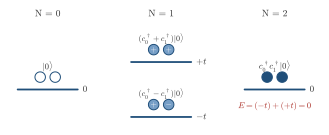
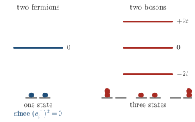

Page 5 of 12 of this session
1.5 A warm-up in first quantization, and the puzzle that breaks it
Can a wave function describe a quantum dot in a superposition of zero and two electrons? We will now see that it cannot, and that this puzzle is the reason to build creation and annihilation operators. At the end of the page we arrive at their anticommutation relations (1.3), which contain the Pauli principle in the algebra of the operators.
Let us take the simplest single-particle system, which is a lattice of sites with one level each and one electron, that forms a finite island such as a quantum dot. Without many-body interactions this is an ordinary diagonalization problem, in the same way as a particle in a box, with a lowest energy state, a first excited state and so on. In this language, “one electron in the ground level” and “one electron in the first excited level” are two different single-particle states, and we can also take superpositions of the two. In every case, however, there is exactly one electron in the system.
Now let us say that we want to describe a quantum dot in a coherent superposition of zero electrons and two electrons, each with 50% probability. We cannot write this as an ordinary wave function. A wave function needs a fixed number of coordinates, and it makes no sense to have zero coordinates and two coordinates at the same time.
This example is not artificial. Reasoning about a number of electrons that fluctuates is what allows us to understand how local magnetic moments couple to each other in real oxides. This is the basis of the Goodenough-Kanamori rules, which predict ferromagnetism or antiferromagnetism. It is also part of the definition of a superconductor, whose mean-field order parameter conserves only the parity of the electron number and not the number itself. This description of superconductors, which does not conserve the number of particles, has its own name, the Bogoliubov-de Gennes formalism. We use it in practice from Section 5.8 on.
1.6 Building second quantization with creation and annihilation operators
To describe systems of this kind we introduce two operators at every site \(i\). The first one is the annihilation operator \(c_i\), which destroys an electron at site \(i\), and the second one is the creation operator \(c_i^\dagger\), which creates one. The Hamiltonian, and all the dynamics of the system, is written only in terms of these operators.
We define the vacuum state, which is the empty state \(|0\rangle\), by
\[c_i|0\rangle = 0 \quad \text{for every site } i. \tag{1.1}\]
A hopping term between two sites, which describes an electron that can jump between sites 0 and 1, is then written as
\[H_\text{hop} = t\left(c_0^\dagger c_1 + c_1^\dagger c_0\right), \tag{1.2}\]
and we read it as “destroy an electron at 1 and create one at 0” plus the reverse process. If we start from the vacuum and apply creation operators, we obtain all the states of the two-site system. These are \(|0\rangle\), then \(c_0^\dagger|0\rangle\) with one electron at site 0, then \(c_1^\dagger|0\rangle\) with one electron at site 1, and finally \(c_0^\dagger c_1^\dagger|0\rangle\) with both sites occupied. Schematic 1.6 lists these four states with their energies. We write \(+t\) here, and from Section 1.10 on the hopping is \(-t\), so the two combinations exchange their levels.

Two sites are coupled by the hopping
\[H_\text{hop}=t\left(c_0^\dagger c_1+c_1^\dagger c_0\right),\qquad t>0.\]
Both sites are occupied, in the state \(c_0^\dagger c_1^\dagger|0\rangle\). What is its energy?
Show the answers
- A. ✗ False
This is false. The energy \(-t\) belongs to one electron in the lower level. Here both levels, \(-t\) and \(+t\), are filled, and the sum is \(0\).
- B. ✓ True
This is true. The hopping needs an empty site, and none is empty, so \(H_\text{hop}\) gives zero on this state. The same follows from adding the two levels, \((-t)+(+t)=0\).
- C. ✗ False
This is false. It would need both electrons in the level \(+t\). The Pauli principle forbids this, since \((c_+^\dagger)^2=0\) for the operator \(c_+^\dagger\) that creates an electron in this level, so the largest energy of two electrons here is still \(0\).
Hopping an electron onto an occupied site gives zero, because \((c_0^\dagger)^2=0\).
Two sites have the number operator \(N=c_0^\dagger c_0+c_1^\dagger c_1\). Compute the mean \(\langle N\rangle\) and the variance \((\Delta N)^2=\langle N^2\rangle-\langle N\rangle^2\) in the state
\[|\Psi\rangle=\frac{1}{\sqrt2}\left(|0\rangle+c_0^\dagger c_1^\dagger|0\rangle\right).\]
Solution
The operator \(c_i^\dagger c_i\) counts the electrons at site \(i\). The empty state has \(N|0\rangle=0\), and the full state has \(N\,c_0^\dagger c_1^\dagger|0\rangle=2\,c_0^\dagger c_1^\dagger|0\rangle\). So the two terms of \(|\Psi\rangle\) are eigenstates of \(N\) with the eigenvalues \(0\) and \(2\), each with the probability \(1/2\), and
\[\langle N\rangle=\tfrac12\cdot 0+\tfrac12\cdot 2=1,\qquad \langle N^2\rangle=\tfrac12\cdot 0+\tfrac12\cdot 4=2.\]
The variance is \((\Delta N)^2=2-1=1\), meaning that the number of electrons is \(1\) on average and fluctuates by one electron around this mean.
This is the puzzle of Section 1.5 written with operators. No wave function with a fixed number of coordinates describes \(|\Psi\rangle\), while in second quantization it is one vector of the Fock space. Both terms have an even number of electrons, so the parity \((-1)^N\) is fixed while \(N\) is not. In the sector with an even number of electrons, a pairing term \(c_0^\dagger c_1^\dagger+c_1c_0\), which creates or destroys two electrons at once, has the eigenstates \((|0\rangle\pm c_0^\dagger c_1^\dagger|0\rangle)/\sqrt2\), with the eigenvalues \(+1\) and \(-1\). The mean-field Hamiltonian of a superconductor has a pairing term of this kind, and this is why it needs second quantization, as we will see in Section 1.15.
Notebook check-in: session1.ipynb, “The spectra of a dimer” (Core)
Build this two-site system and diagonalize it. Check that the Fock states above give the same spectrum that you would obtain from an ordinary two-level treatment in first quantization, before we add any interactions.
Try it. Run the cell and count the eigenvalues of the dimer with spin. Set has_spin=False and check that two remain, at \(-t\) and \(+t\). These are the levels of the column with one electron in the figure above.
1.7 Enforcing fermionic statistics
Up to now nothing distinguishes fermions from bosons, and everything above applies to both in the same way. The difference is introduced through the algebra of the operators. Fermi statistics requires that the many-body wave function changes sign when we exchange two particles, and a direct consequence is that a given single-particle level can have zero fermions or one fermion, but never two. We impose this with anticommutation relations.
The fermionic creation and annihilation operators obey the anticommutation relations
\[\{c_i, c_j^\dagger\} = \delta_{ij}, \qquad \{c_i, c_j\} = \{c_i^\dagger, c_j^\dagger\} = 0. \tag{1.3}\]
For \(i=j\) the last relation gives \((c_i^\dagger)^2=0\), so a level holds zero fermions or one fermion, and the antisymmetry of the wave function under the exchange of two fermions comes from the same algebra.
The second relation is the important one. If we take \(i=j\) it gives \((c_i^\dagger)^2 = 0\), which means that we cannot create two electrons in the same level. At the same time it imposes the antisymmetry of the wave function, so the Pauli exclusion principle is part of the algebra itself and we do not need to add it by hand.
The steps From the anticommutation relations (1.3) to the Pauli principle
We start with the simplest case, one level \(i\). The relation \(\{c_i^\dagger,c_i^\dagger\}=0\) of (1.3) reads \(2(c_i^\dagger)^2=0\), so
\[(c_i^\dagger)^2=0,\]
meaning that a second electron cannot be created in a level that already holds one. The occupation of the level is \(n_i=c_i^\dagger c_i\). The first relation with \(j=i\) gives \(c_ic_i^\dagger=1-c_i^\dagger c_i\), and with it
\[n_i^2=c_i^\dagger\,(c_ic_i^\dagger)\,c_i=c_i^\dagger c_i-c_i^\dagger c_i^\dagger c_ic_i=n_i,\]
since the last term holds \((c_i^\dagger)^2=0\). An operator with \(n_i^2=n_i\) has only the eigenvalues \(0\) and \(1\), so the level holds zero fermions or one fermion, which is the Pauli principle.
The relation \(\{c_0^\dagger,c_1^\dagger\}=0\) gives \(c_1^\dagger c_0^\dagger|0\rangle=-c_0^\dagger c_1^\dagger|0\rangle\). The state of two fermions changes sign when we exchange the order in which they are created, and this is the antisymmetry of the wave function.
We now take the two sites of (1.2) with the four Fock states of Schematic 1.6. The vacuum has \(H_\text{hop}|0\rangle=0\), since \(c_0|0\rangle=c_1|0\rangle=0\) by (1.1). With one electron, \(H_\text{hop}\) takes \(c_1^\dagger|0\rangle\) to \(t\,c_0^\dagger|0\rangle\) and back, so in the basis \(c_0^\dagger|0\rangle\), \(c_1^\dagger|0\rangle\) it is the matrix
\[\begin{pmatrix}0&t\\ t&0\end{pmatrix},\]
whose eigenvalues are \(-t\) and \(+t\). With two electrons, each term of \(H_\text{hop}\) tries to put an electron on an occupied site. In the first term we move \(c_1\) to the right with (1.3),
\[c_0^\dagger c_1\,c_0^\dagger c_1^\dagger|0\rangle=-(c_0^\dagger)^2\,c_1c_1^\dagger|0\rangle=0,\]
and the second term gives \((c_1^\dagger)^2=0\) in the same way, together with a term that holds \(c_0|0\rangle=0\). So the energy of the full state is \(0\), and the four energies are \(0\), \(\pm t\) and \(0\), as in Schematic 1.6.

Suppose \(c_i^\dagger\) and \(c_j^\dagger\) commuted instead of anticommuting. What would change?
Show the answers
- A. ✓ True
This is true. The statement \((c_i^\dagger)^2=0\) follows only from the anticommutation relation. Without it, nothing stops a second particle from entering the same level, and we describe bosons.
- B. ✗ False
This is false. For bosons the vacuum still satisfies \(b_i|0\rangle=0\), since there is no particle to remove. The vacuum condition does not depend on the statistics.
- C. ✗ False
This is false. The term \(t(b_0^\dagger b_1+b_1^\dagger b_0)\) of bosons is Hermitian, because it is written with its own Hermitian conjugate. Its levels are \(\pm t\) in the one-particle sector, as for fermions.
Bosons and fermions differ in the algebra of the operators, and not in the vacuum or in the Hermiticity.
Fermionic operators obey the anticommutation relations
\[\{c_i,c_j^\dagger\}=\delta_{ij},\qquad \{c_i,c_j\}=\{c_i^\dagger,c_j^\dagger\}=0.\]
Which identity follows from them?
Show the answers
- A. ✗ False
This is false. The first relation with \(j=i\) gives \(c_ic_i^\dagger=1-c_i^\dagger c_i\). On an occupied site, in the state \(c_i^\dagger|0\rangle\), this operator gives \(0\) and not \(1\).
- B. ✓ True
This is true. The last relation with \(j=i\) reads \(2(c_i^\dagger)^2=0\). So a second fermion cannot be created in the same level, which is the Pauli principle.
- C. ✗ False
This is false. The first relation with \(i\neq j\) gives \(c_jc_i^\dagger=-c_i^\dagger c_j\), with a minus sign. On the state \(c_j^\dagger|0\rangle\) the left side gives \(c_i^\dagger|0\rangle\) and the right side gives \(-c_i^\dagger|0\rangle\).
The anticommutation relations fix how every product of two operators changes when we swap its order.
- Section 5.6 comes back to the dot in a superposition of zero and two electrons, now for the pairing Hamiltonian of a superconductor.
- Virtual hops that change the number of electrons on a site give the superexchange of Section 6.8 and the Goodenough-Kanamori rules of Section 6.11.
- The anticommutation relations (1.3) come back in Section 7.2b, where the Jordan-Wigner transformation needs a string to build fermions from spins.